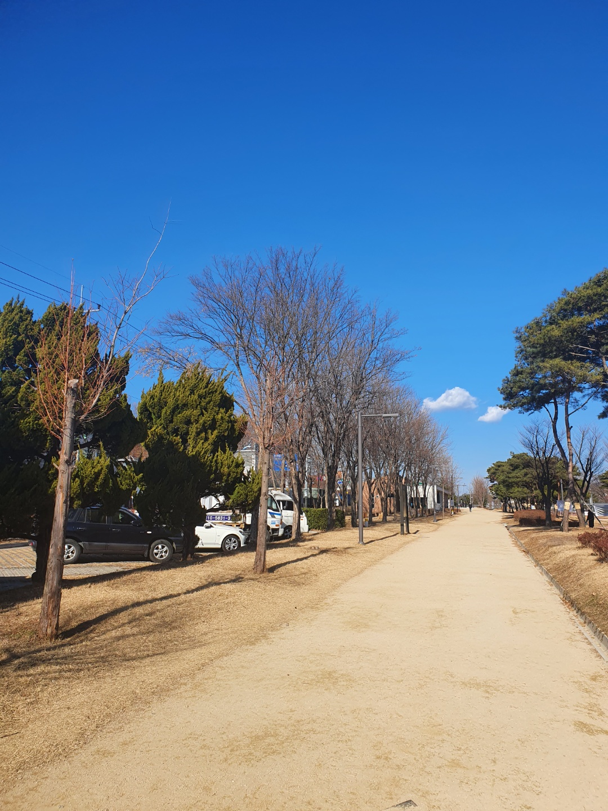

빈 캔퍼스를 채우는 것이 가장 어렵듯, 자신을 똑바로 마주보는 것은 고통스럽다. 견딜 수 있는 힘을 기를 수 있도록. 일단은 피하지 않는 연습부터. 차근차근. 씻고 움직이자.
나는 절대 혼자가 아니다. 나는 나의 엄마이고, 나는 나의 아빠이고, 나는 나의 친구이자 애인이다. 내가 나의 보호자이다. 내가 내 자신의 보호자가 되어야 보호해줘야합니다. 그러니까 나를 혐오하고, 나를 계속 채찍질하는 게 아니고, 내가 내 자신을 지켜주고 보호해줘야합니다. 저는 지금 저의 딸을 키우고 있는 거에요. 얘 먹여살리면서 지금 살고 있어요. 감성적이다 보니까 이성적인 판단을 잘 못하게 될 때, '내가 내 엄마다.'라는 관점으로 그 사건을 바라보게 되면 굉장히 이성적인 판단이 가능해져요. 엄마가 되어 딸에게 말하고 싶은 것을 내 스스로 내 자신에게도 해줘야해요. 나는 내 자산의 보호자가 되는 게 맞고, 내가 나를 지켜줘야합니다. 나 자신이 완벽해질려고하고 시렇어하는 것은 나를 진짜로 싫어하는 것이 아니에요. 내가 나를 너무 사랑하고 기대치가 너무 높아서 그 기대치를 다 못 따라가니까, 그거에 대해서 스스로가 화를 내는 거에요. 그러니까 일단 본인이 본인을 사랑하는 마음이 있다는 것을 먼저 인지하세요. 본인은 본인에게 편이 되어줘야 하고, 보호자가 되어야 해요. 그리고 내 자신이 자식이다, '내가 나를 키운다.' 이런 마음으로 한 번 접근을 해보세요. 내가 내 자식한테 함부로 대하는 꼴은 못 보겠잖아요. 자기혐오가 계속되면 진짜 지치거든요. 계속 힘들고 마음에 계속 짐덩이가 가득 있는 것 같은 느낌이에요. 그거를 해소하면, 하루 하루 살아가는 것이 행복할 거에요. 새로운 삶을 사는 기분일 거에요. 세상의 그 누구라도 여러분을 함부로 대할 수는 없어요. 그게 여러분 자신이라도. 여러분들은 함부로 대해질 사람이 아니에요. 여러분들은 정말 정말 귀한 사람이에요. 세상에 하나 밖에 없고요. 그 누구라도 대체될 수 없는 사람이에요. 그러니까 우리, 이 몸에 이 영혼이 깃들려서 죽을때까지 살아야 되는 거라면 이왕지사 나를 사랑하면서 사는 게 좋잖아요. 감정낭비도 덜 할 수 있고, 매일 매일 조금이라도 날 웃게 만들 수 있잖아요. 그러니까 우리 함께 스스로를 사랑해가면서 살아가보도록 해요. -유튜버 박금서_Naya-